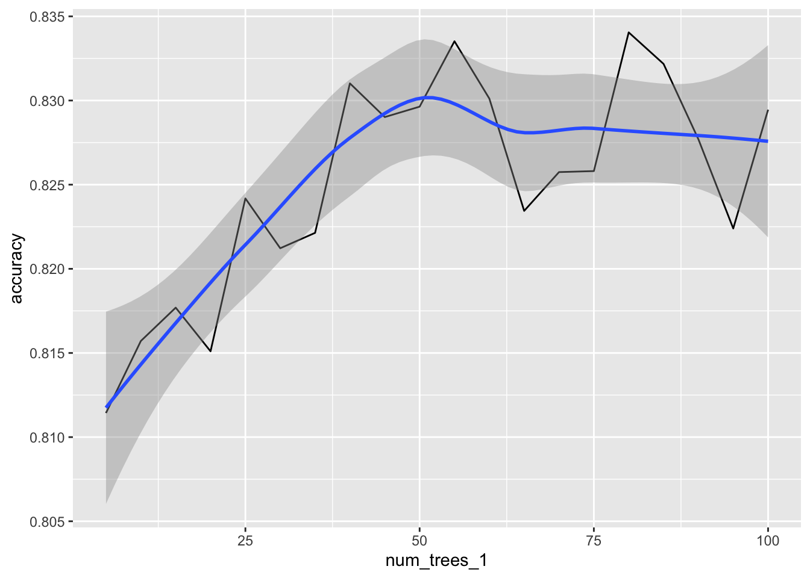

data(cells, package = "modeldata")Model tuning
Hyper parameter tuning is possible within Spark. sparklyr provides an interface that makes it possible to setup, and run this kind of model tuning.
This article walks through the basics of setting up and running a cross validation tuning run using the cells data from the modeldata package.
The goal of the experiments in the example is to see at what point does the number of trees in the model stop improving the accuracy of the predictions. We will have Spark run multiple iterations of the same model with an increasing number of trees.
Data setup
For this example, we will use a local connection, using Spark 3.3.
library(sparklyr)
sc <- spark_connect(master = "local", version = "3.3")The cells data is copied to the Spark session.
tbl_cells <- copy_to(sc, cells, name = "cells_tbl")We will split the data into two sets, “training” and “test”. The test split will be treated as the “holdout” data to be used at the end of the process to confirm that we did not over fit the model.
tbl_cells_split <- tbl_cells %>%
select(-case) %>%
sdf_random_split(
training = 0.8,
test = 0.2,
seed = 100
)Cross validator prep
Preparing the cross validator requires three elements:
- An ML Pipeline
- A
listobject containing the “grid”, meaning the different parameters to test - An “evaluator” that will calculate the metrics of each model run
Pipeline
In this example we will use a very simple pipeline. It will contain a formula step and a Random Forest model.
cells_pipeline <- sc %>%
ml_pipeline() %>%
ft_r_formula(class ~ .) %>%
ml_random_forest_classifier(seed = 207336481)Each step within a pipeline receives a unique identifier. This identifier is made up of the name of the step and a UID. The UID will change every time a new pipeline is created. Here is an example of the out put for cells_pipeline:
#> Pipeline (Estimator) with 2 stages
#> <pipeline__a1c04c2f_b955_4917_89b6_67cb576a779b>
#> Stages
#> |--1 RFormula (Estimator)
#> | <r_formula__043dd75a_7fd6_48bb_85c5_f20b321b97cb>
#> | (Parameters -- Column Names)
#> | features_col: features
#> | label_col: label
#> | (Parameters)
#> | force_index_label: FALSE
#> | formula: class ~ .
#> | handle_invalid: error
#> | stringIndexerOrderType: frequencyDesc
#> |--2 RandomForestClassifier (Estimator)
#> | <random_forest_classifier__52fc33ff_c4dc_44ac_b842_b873957db90a>
#> | (Parameters -- Column Names)
#> | features_col: features
#> | label_col: label
#> | prediction_col: prediction
#> | probability_col: probability
#> | raw_prediction_col: rawPrediction
#> | (Parameters)
#> | bootstrap: TRUE
#> | cache_node_ids: FALSE
#> | checkpoint_interval: 10
#> | feature_subset_strategy: auto
#> | impurity: gini
#> | leafCol:
#> | max_bins: 32
#> | max_depth: 5
#> | max_memory_in_mb: 256
#> | min_info_gain: 0
#> | min_instances_per_node: 1
#> | minWeightFractionPerNode: 0
#> | num_trees: 20
#> | seed: 207336481
#> | subsampling_rate: 1Grid
The way we can pass the parameters to try is via a simple list object. sparklyr performs partial name matching to assign the list’s entries to the pipeline steps and the parameters.
The idea is to modify the number of trees for each model run. From the output of the ML Pipeline above, we see that we need to modify the following:
#> | <random_forest_classifier__52fc33ff_c4dc_44ac_b842_b873957db90a>
#> | ...
#> | (Parameters)
#> | ...
#> | num_trees: 20In R, we create the grid spec using the following:
cells_grid <- list(
random_forest_classifier = list(
num_trees = 1:20 * 5
)
)
cells_grid
#> $random_forest_classifier
#> $random_forest_classifier$num_trees
#> [1] 5 10 15 20 25 30 35 40 45 50 55 60 65 70 75 80 85 90 95
#> [20] 100Two things to highlight about the grid spec:
random_forest_classifieris used to partially match torandom_forest_classifier__52fc33ff_c4dc_44ac_b842_b873957db90ain the pipeline. It is possible to pass the entire name, but that may prevent it from working if a new pipeline is used. A new pipeline will have a different UID.- For
num_treeswe passed a vector of 20 values to test with
“Evaluator”
A metric will have to be calculated for each validation set in the folds. The model tuning function requires for that to be explicitly defined as an argument (ml_cross_validator()). There are multiple outcomes on the class field in the tbl_cells table, this means that we will use ml_multiclass_classification_evaluator() for our validation function.
cells_evaluator <- ml_multiclass_classification_evaluator(
x = sc,
metric_name = "accuracy"
)The “evaluator” function to use is based on the type of model that is being used for tuning. Here is the list of the available “evaluator” functions in sparklyr:
Model tuning
All the preparations steps come together now as arguments of ml_cross_validator(). There are two additional arguments to consider:
num_folds: The number of folder for the cross validation. The higher the number, the longer it will take to complete.parallelism: The number of threads to use when running parallel algorithms. Default is 1 for serial execution.
In this example, cells_pipeline, cells_grid, and cells_evaluator are passed to the respective arguments.
cells_cv <- ml_cross_validator(
x = sc,
estimator = cells_pipeline,
estimator_param_maps = cells_grid,
evaluator = cells_evaluator,
num_folds = 5,
parallelism = 4
)
cells_cv
#> CrossValidator (Estimator)
#> <cross_validator__ec69f1d9_f6ed_41ed_8bb2_3ab347638969>
#> (Parameters -- Tuning)
#> estimator: Pipeline
#> <pipeline__8f76aeb5_4929_4b72_adf4_c66325fbc307>
#> evaluator: MulticlassClassificationEvaluator
#> <multiclass_classification_evaluator__f5e6d38f_9d66_4b81_8dba_44cd171b7aa1>
#> with metric accuracy
#> num_folds: 5
#> [Tuned over 20 hyperparameter sets]The ml_fit() function will actually run the model tuning. This is where the training split of the data is used.
model_cv <- ml_fit(
x = cells_cv,
dataset = tbl_cells_split$training
)Validation metrics
The ml_validation_metrics() function will extract the metrics from each of the values passed for number of trees parameter. If more than one parameter would have been used, the number of results would be the total number of combinations.
cv_metrics <- ml_validation_metrics(model_cv)
cv_metrics
#> accuracy num_trees_1
#> 1 0.8114324 5
#> 2 0.8157122 10
#> 3 0.8176925 15
#> 4 0.8150990 20
#> 5 0.8241812 25
#> 6 0.8212221 30
#> 7 0.8221358 35
#> 8 0.8310173 40
#> 9 0.8290158 45
#> 10 0.8296345 50
#> 11 0.8335203 55
#> 12 0.8301165 60
#> 13 0.8234423 65
#> 14 0.8257469 70
#> 15 0.8258069 75
#> 16 0.8340482 80
#> 17 0.8321753 85
#> 18 0.8276960 90
#> 19 0.8223973 95
#> 20 0.8294530 100For easier selection, we can use a quick plot to visualize how accuracy improves as more trees are used, and when does the benefit plateau.
library(ggplot2)
cv_metrics %>%
ggplot(aes(num_trees_1, accuracy)) +
geom_line() +
geom_smooth()
Model selection
As seen in the previous section, 50 trees seems to be a good number to use. To finalize, a new model is fit, using that number for num_trees.
A Model pipeline or a regular model could be used to do this. For this example we will just use the single step of fitting a new model using ml_random_forest_classifier() directly.
cell_model <- ml_random_forest_classifier(
tbl_cells_split$training,
class ~ .,
num_trees = 50
)Test data metrics
The final step is to confirm that the model is not over-fitted. We use the new model against the test split, and then piping it to ml_metrics_multiclass() to confirm that the accuracy is within the expected range.
cell_model %>%
ml_predict(tbl_cells_split$test) %>%
ml_metrics_multiclass()
#> # A tibble: 1 × 3
#> .metric .estimator .estimate
#> <chr> <chr> <dbl>
#> 1 accuracy multiclass 0.839